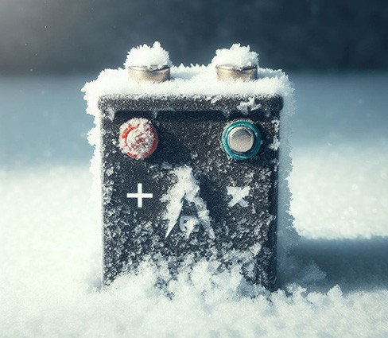

The crisp winter air may be refreshing, but for your trusty lithium battery packs, it can be a harsh reality. Unlike the cozy comfort of hot cocoa and roaring fireplaces, cold temperatures can significantly impact their performance and even shorten their lifespan. But fear not, fellow tech enthusiast!
This article digs into the effects of winter on these powerhouses and offers practical tips on how to keep them warm and happy, even when the mercury plummets.
Cold Shoulder: How Winter Bites
When temperatures drop, the physical state of the materials inside your lithium battery takes a hit. The crystal structure of the lithium compounds changes, making it harder for them to store and release energy. This translates to a sluggish performance, like trying to run in ski boots. Not ideal, right?
But that's not all. The electrolyte solution, the liquid that facilitates the flow of ions within the battery, can also freeze and expand in extreme cold. This can cause internal swelling and even cracking, like frost damage on an unprotected windowpane. Yikes!
Winter's Bite on Capacity

Let's face it, winter isn't kind to any type of battery. Compared to their lead-acid brethren, which lose a good 20-30% of their capacity when the temperature dips below freezing, lithium batteries fare much better. They manage to retain an impressive 95-98% of their power, proving they're the winter warriors of the battery world.
Warm Up the Party: Strategies for Battery Bliss
Now, let's get down to business: how do we protect our precious lithium batteries from winter's icy grip?
Here are some handy tips:
- Temperature Control: Think Goldilocks and the three bears – aim for just the right temperature. Keep your batteries in a controlled environment within the recommended range for their specific type. Most lithium batteries thrive in temperatures between 50°F and 85°F.
- Protective Shelter: Give your batteries a cozy coat! A well-insulated case or bag can provide a buffer against the cold and help them retain their warmth. Just remember, avoid anything too tightly sealed, as trapped heat can be just as damaging as the cold.
- Regular Check-Ups: Schedule regular maintenance appointments for your batteries. Like a doctor's visit, these check-ups can detect any early signs of winter-induced damage, allowing you to take preventive measures before things get worse.
- Pre-Use Warm-Up: Batteries appreciate a gentle wake-up call, just like you do. Before demanding peak performance, give them a chance to warm up gradually. This helps prevent thermal shock and keeps them happy and humming.
- Frequent Fueling: Unlike their lead-acid cousins, lithium batteries can be used and discharged even in the coldest weather without harm. However, avoid charging them when the temperature dips below freezing. Let them thaw out first, then plug them in for a power boost.
- Quality Counts: Invest in high-quality lithium batteries from reputable brands like Lithium Hub. These batteries often come equipped with built-in safety features and cold-weather performance enhancements, making them the ultimate winter warriors.
Keeping Your Batteries Cozy This Winter
While winter may throw icy challenges at your lithium batteries, remember, you're not powerless! By understanding the effects of cold temperatures and implementing these simple yet effective strategies, you can keep your batteries warm, happy, and delivering optimal performance all season long. So go forth, brave tech adventurer, and conquer the winter with your trusty lithium companions by your side!